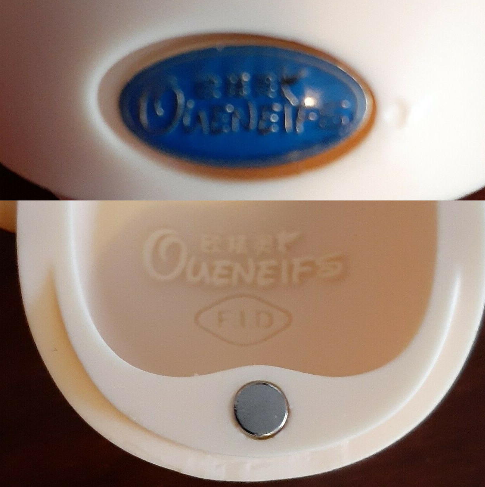
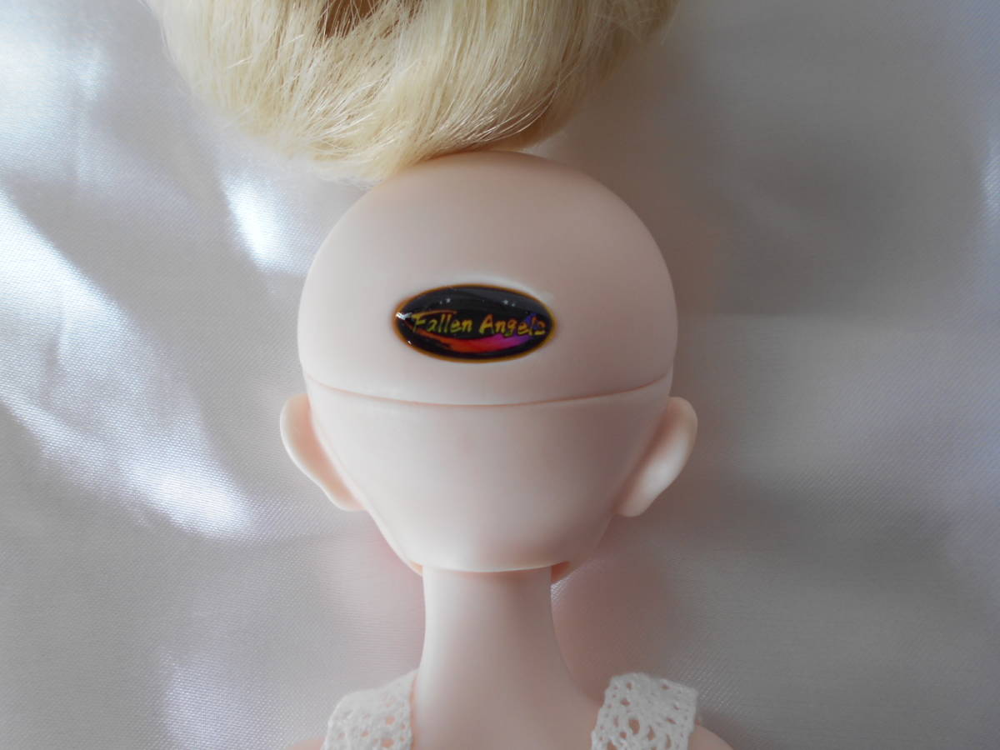
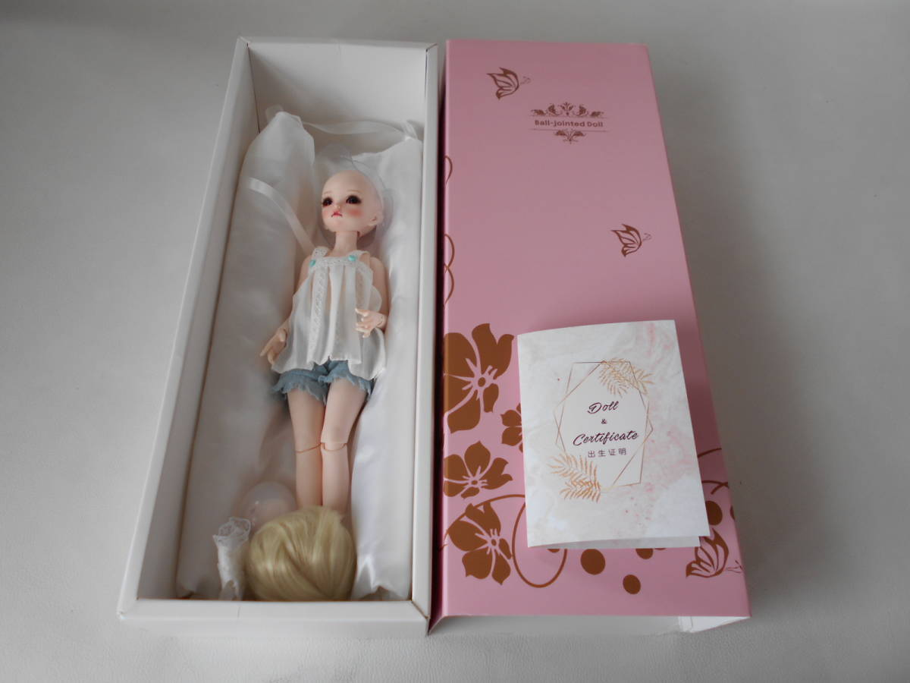
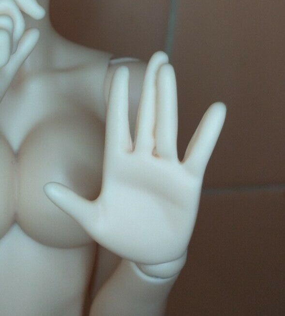
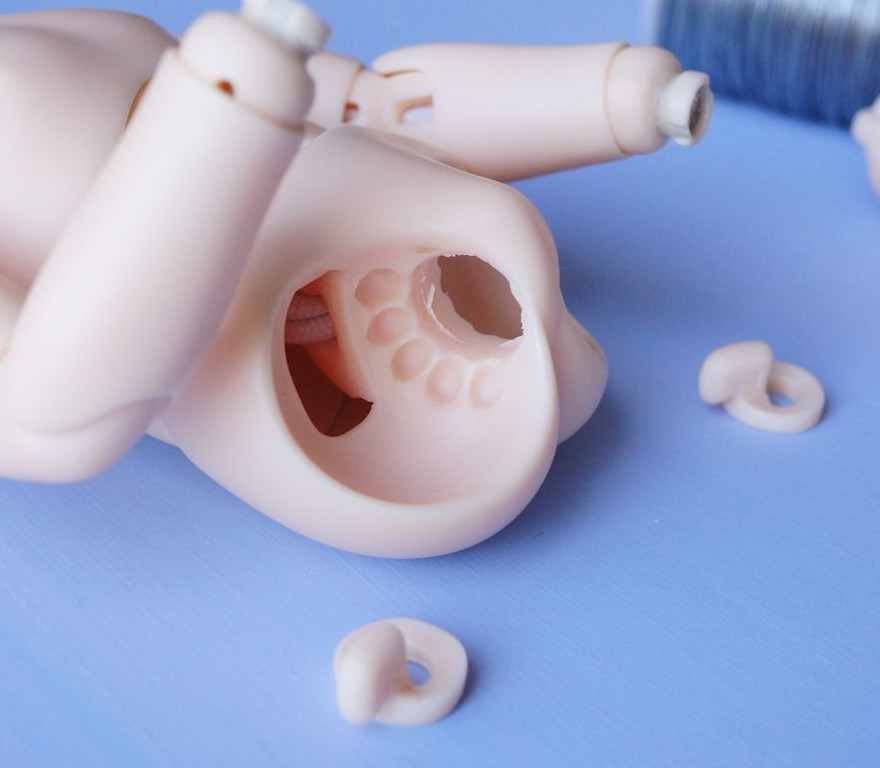
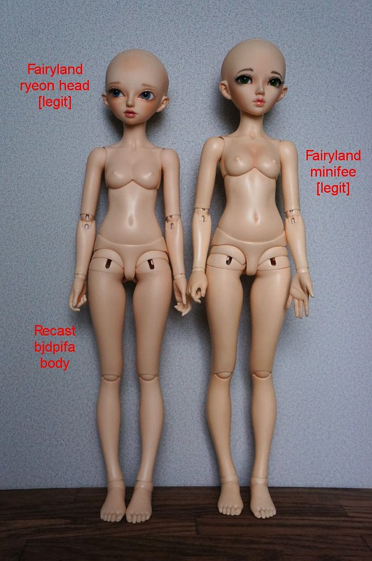
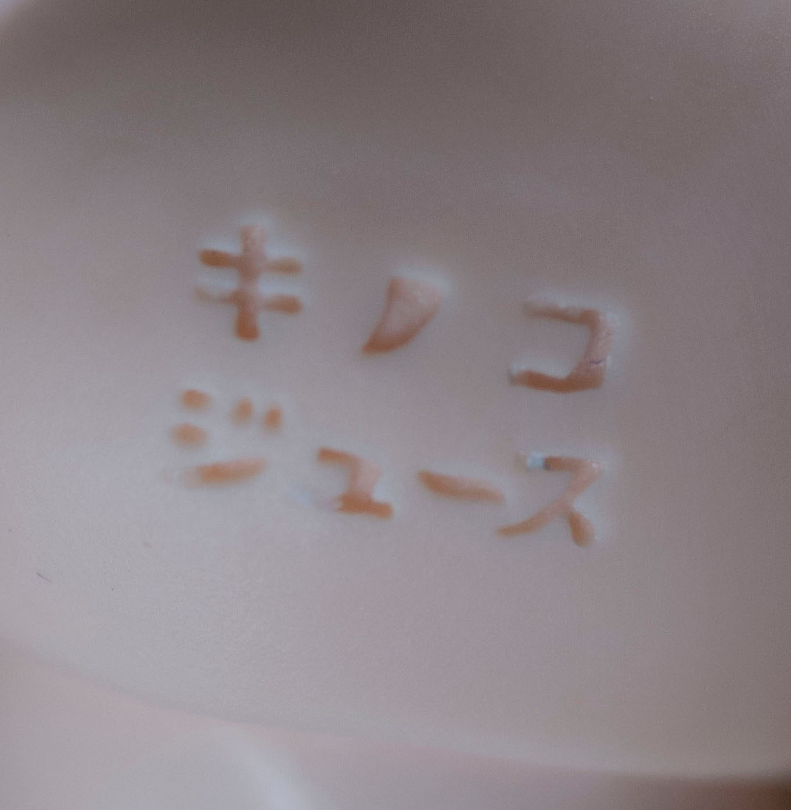
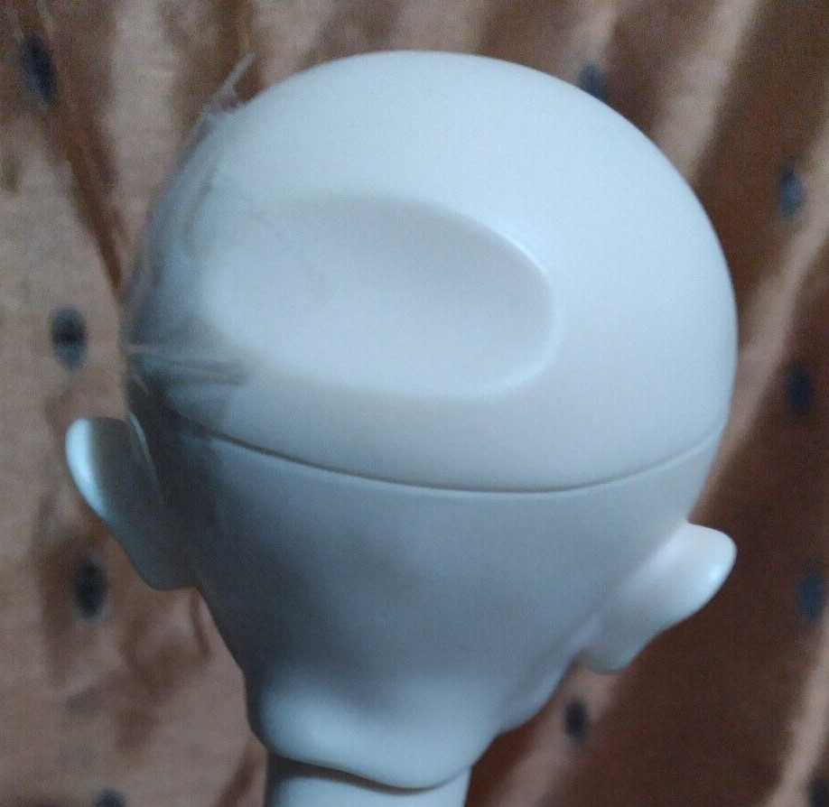
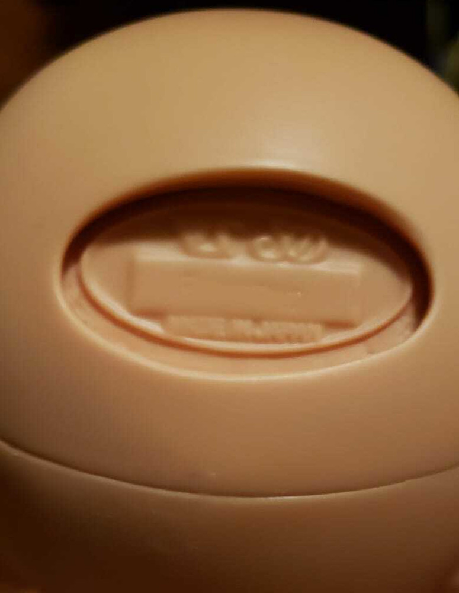
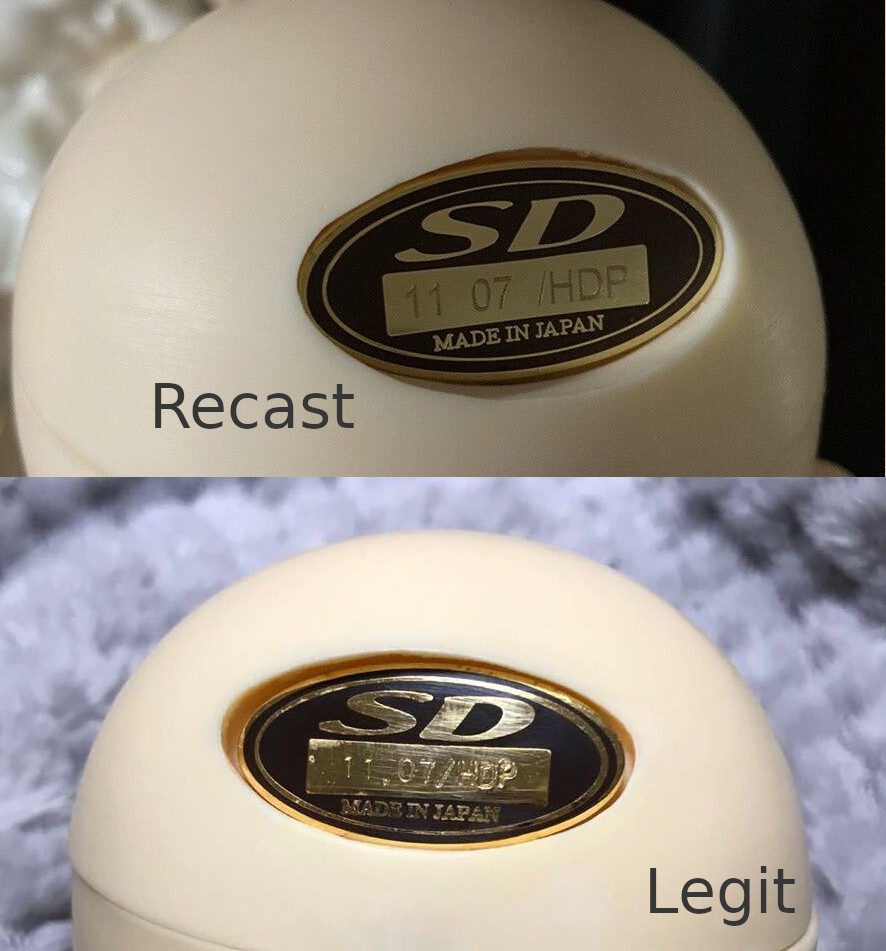

I truly believe hiding this information is detrimental to the BJD hobby. I understand why DoA bans it, because recast discussion destroys all enjoyment of BJDs. This page is not a discussion, but information you may want when checking dolls you have purchased from indirect sources.
It's almost hard to find this information now due to everything being locked behind accounts and group memberships. If you have more information, feel free to send me some of your tips.
Sometimes sellers are not disclosing that their doll is recast, but instead only writing "no CoA". If you come across this on a listing, message the seller and ask point blank "is this doll a recast?" Some will admit to it, some will beat around the bush. If the seller only assures you the doll is high quality, I would assume the doll is recast.
Many collectors of dolls (more than BJD) will buy recast because they simply do not care and did no research past hitting the buy button on AliExpress. Keep this in mind if you see other kinds of dolls in their sales listings.
All photos are of recasts unless otherwise noted. Many photos have been saved from secondhand recast listings on ebay. Right click to view image in new tab for full resolution. If any of these images are yours and you want them removed, DMCA me.
A recast master list exists and is updated by recast supporters. It may not be completely accurate to all listings across all sites. If the doll you are looking for is not on this list, hopefully a recast version doesn't exist and you can rest more easily. Not all BJD companies are targeted equally.
The major BJD recasters are Oueneifs/ChinaBJD/Luo/Shuga Fairy, BJDPifa, HeheBJD, BJD Baby. If you see ANY markings on the doll with the name of a recaster, the doll is a recast.
Oueneifs headplate and marking on headcap of Iplehouse FID doll
"Fallen Angels" headplate on KID Irene
A few recasters have recreated CoAs for Soom The Gem and Fairyland dolls. Many recasters send their own CoA that does not resemble the original. Common generic fake CoA say "The only love For BJD" or "Doll & Certificate".
A few doll boxes have been recreated, but most recasters send dolls in a box of their own design with the original company's name on it. The packaging almost never includes fabric pillows anymore. Blister packaging is common now. I have never seen a legitimate resin company use blister packaging (Azone does for their dolls). In the past, the doll wrapped in bubble wrap and shoved in an unmarked box was common.
"Fallen Angels" IH KID Irene pull out box and CoA
There are plenty of recast box opening videos on YouTube which will give you an idea of what to look out for in packaging.
Many companies only produce dolls in specific resin colors. If the doll was never released in the color, that is a very bad sign. This is useful for Volks dolls, because many limited dolls were only released in a single color.
Details are often lost in casting. Look for imperfect fingers, messy text. Stringing channels may not be carved cleanly.
Minifee hand
Messy channels in LittleFee body (source)
If you have the original doll to compare with, look for
Shrinkage of Unoa 1.5, recast on left
Shrinkage of Minifee (source)
It is possible, but rare, to run across recast dolls on Mandarake and other secondhand Japanese stores. This Japanese wiki shows images of recast listings, what to look for, and comparisons between dolls. Mandarake will never intentionally sell you a recast, but mistakes have been made before. I have noticed Japanese sellers on ebay selling legitimate Volks dolls with obvious recasts from overseas companies beside them.
Kiki and Jill both have "キノコジュース" mark on their right butt cheek. Recasters often have trouble replicating the sharp corners of the text.
Kiki's キノコジュース marking
Amaranth's Castaways has a detailed review on what to look for on recast Minifee.
Boxes that say "CP/FairyLand" and "Made in China" are recast.
Some recasters have recreated headplates. Some of these fake headplates can look legit to an untrained eye. Others either leave the spot empty, fill it in, or add their own headplate.
Creamy Mami
F-73
Lorina 1st headplate comparison
note the period and spacing in the text as well as the smoothness of the well
unknown head sculpt
Note the detail lost in "MADE IN JAPAN". VS stamps inside the head were messily cast as well
Please visit Mandarake/Dollyteria/etc to compare headplates to other listings of the same doll when buying secondhand. "MADE IN JAPAN" should always be clear and detailed. Dolls made before 2019 should have "SD" on the top line and dolls made after have "VS SD". Dolls made in that year could have either.
Bad pressing of headplates does not signify a recast. I have seen some VERY badly pressed plates on authentic dolls.
Amaranth's Castaways, BJD WTF V.2, No Recastbjd Twitter (JP), BJD Life